RANEPA — Moscow (2019–2023) RU / EN
Bachelor's degree in Management of Urban Spatial Development. The program covered major topics related to the city planning: sociology, economics, politics, infrastructure.
This was the birthplace of interest in GIS and all the opportunities that it offers.
Key Subjects & Projects
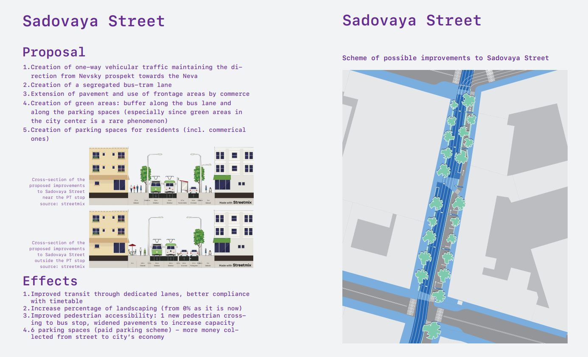
Urban Mobility Policy RU
Short course on the trends in mobility planning with the analysis of public transport provision and development of mobility solutions.
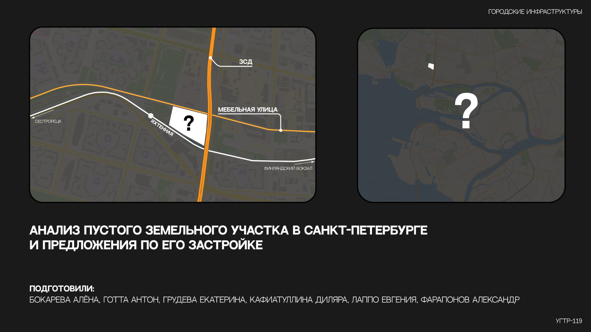
Urban Infrastructures RU
A course on the way how urban development projects should be analyzed with the focus not only on physical, but also socio-economical aspects.
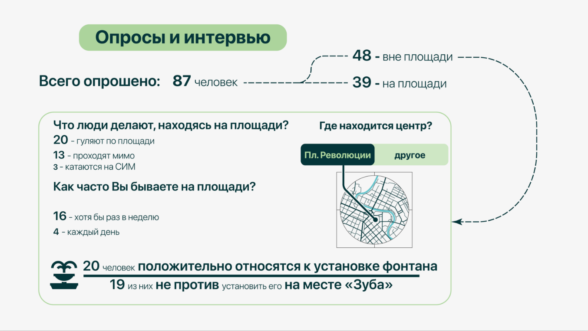
Vologda: Interdisciplinary Project RU
3-day-long Trip to the city of Vologda where the theoretical knowledge was applied to the proposition of possible alterations to the Revolutsiya Square area.
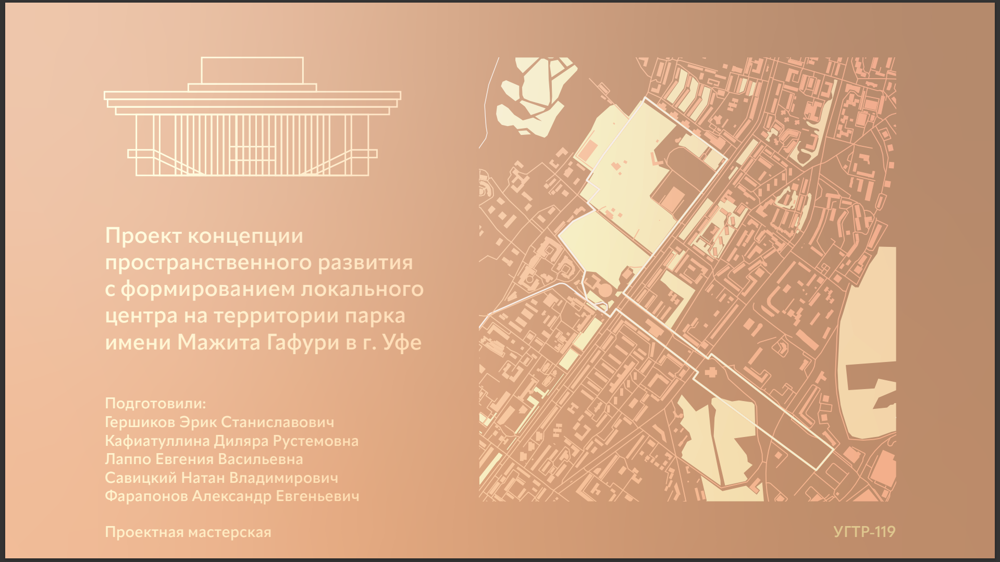
Ufa: Course Project RU
Course project in the 3rd year which aimed at the analysis, modelling and the design of possible revitalisation strategies for Gafuri Park in the city of Ufa.
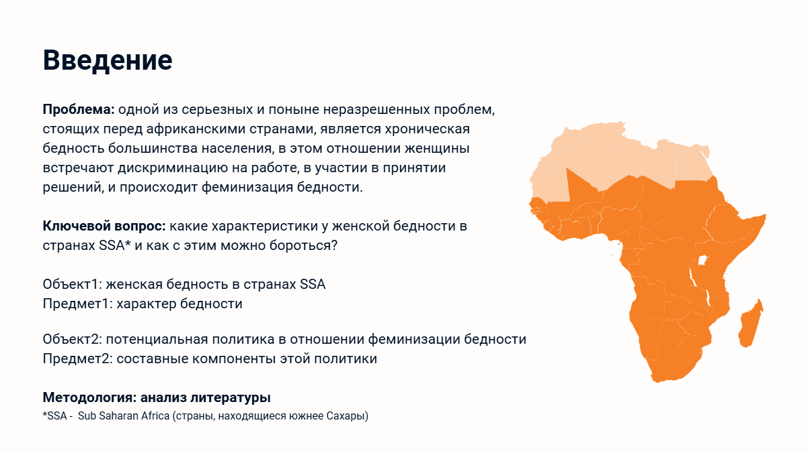
Minor: Sociology RU
During the minor numerous courses have been covered: STS (Science & Technology Studies), Gender Studies, Data Analysis, Methodology of Sociological Study, Microsociology, Ethnicity and Nationalism Studies.
 Bachelor Final Project RU
Bachelor Final Project RU
Title: “Urban regulation at night: case of post-socialist city of Tbilisi”
This study examines the regulation of nightlife in cities and analyses the impact of administrative strategies on night-time spaces. It includes empirical research into night-time practices in Tbilisi, as well as a comparative analysis of regulatory documents in New York.
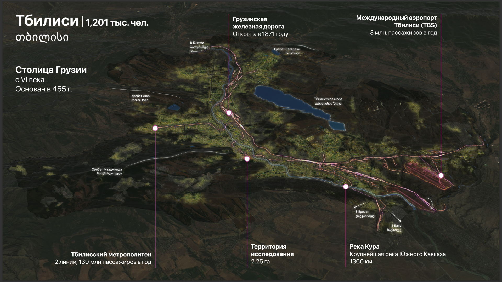
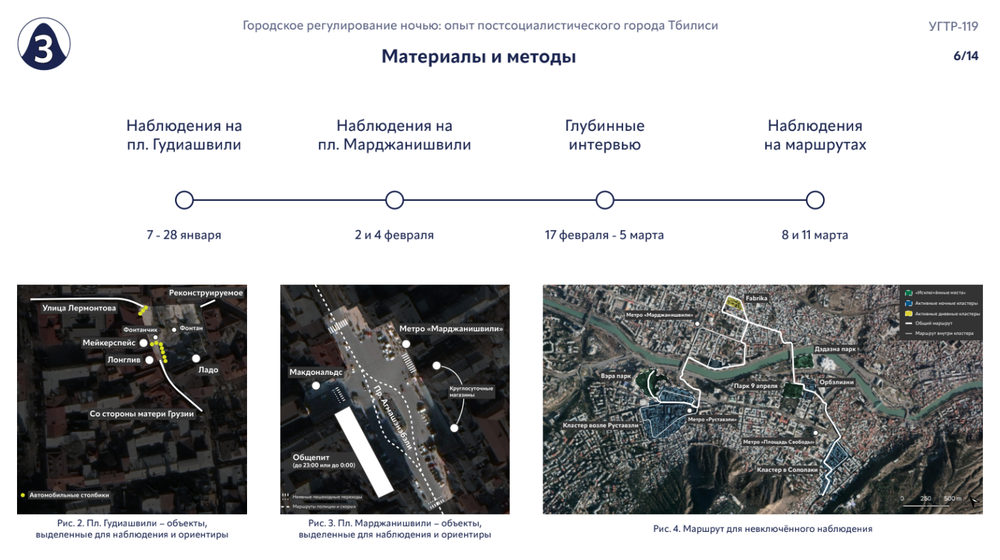
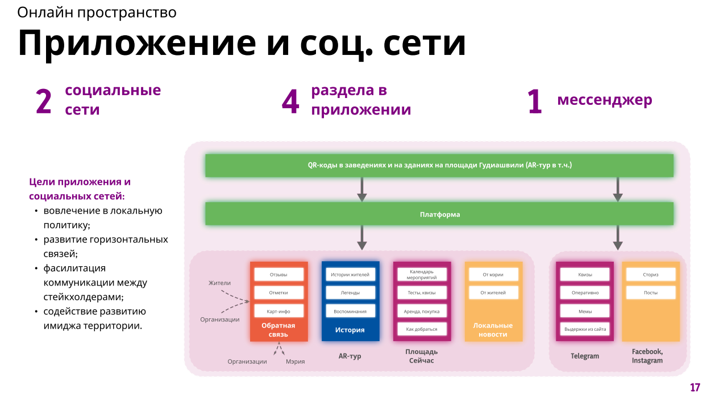
 Paper
Individual Presentation
Group Album
Group Presentation
Paper
Individual Presentation
Group Album
Group Presentation
PLUS Salzburg — M.Sc. Applied Geoinformatics (2023–present) EN
Studying spatial analysis, remote sensing, web cartography, geodata science, and geoprocessing at the Paris Lodron University of Salzburg. Projects focus on web maps, Story Maps, and geospatial applications.
Web Maps & Story Maps
Interactive maps built for various courses — deployed on GitHub Pages or ArcGIS Online.
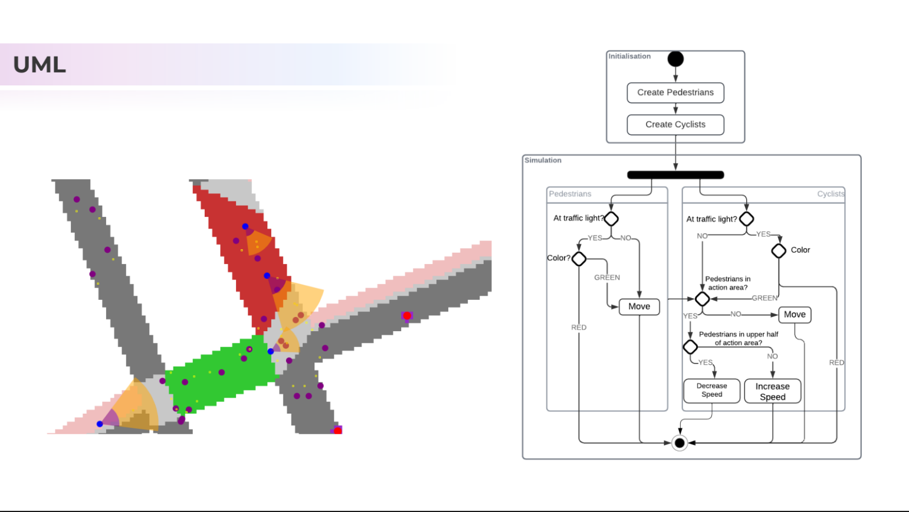
Spatial Simulation
This final project "Bicycle Street Design" was a collaborative effort between Aleksandr Faraponov and Lisa Glahsl. The objective was to simulate interactions between cyclists and pedestrians, with a primary focus on cyclists. Throughout the course, the model was continuously refined based on both the computational capabilities of the GAMA platform and the students’ ability to implement new functionalities. These iterative improvements will be discussed in the Discussion section.
From a broader perspective, the model successfully captures pedestrian-cyclist interactions, leveraging a grid-based approach with action areas to define behavioral zones — (probably) an advantage over purely graph-based models. However, certain refinements are needed to enhance predictive accuracy, resolve performance and optimisation issues (the model runs really slow with 10 pedestrian agents or more).
GitHubKey Courses
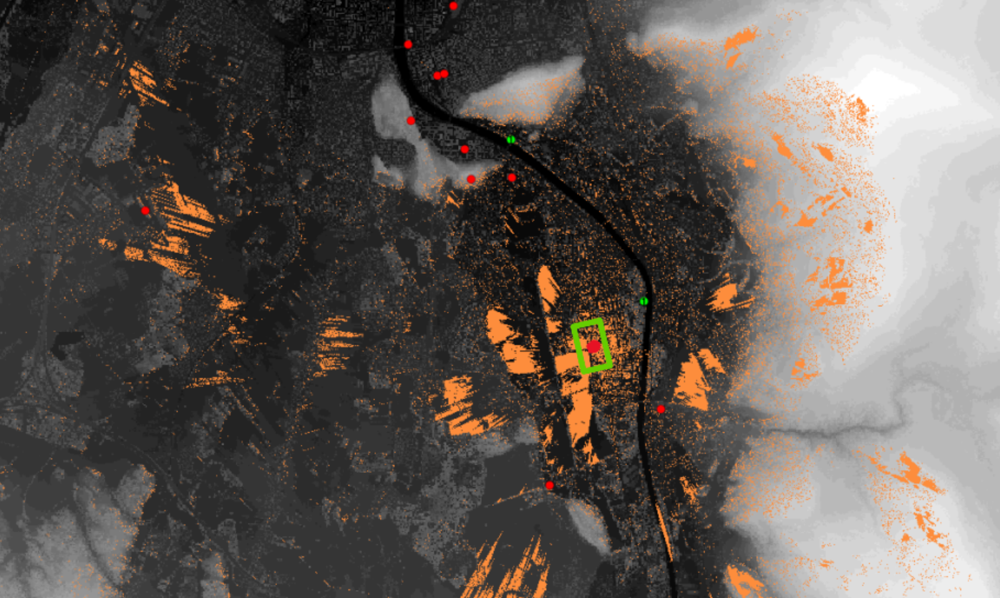
Methods in Spatial Analysis EN
Usage of ArcGIS Products to train spatial analysis techniques.
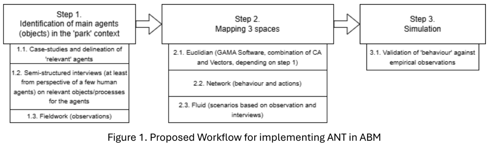
Analysis and Modelling EN
Development of Methodology based on Post-ANT theory to enhance spatiality aspect in Agent-Based Modelling
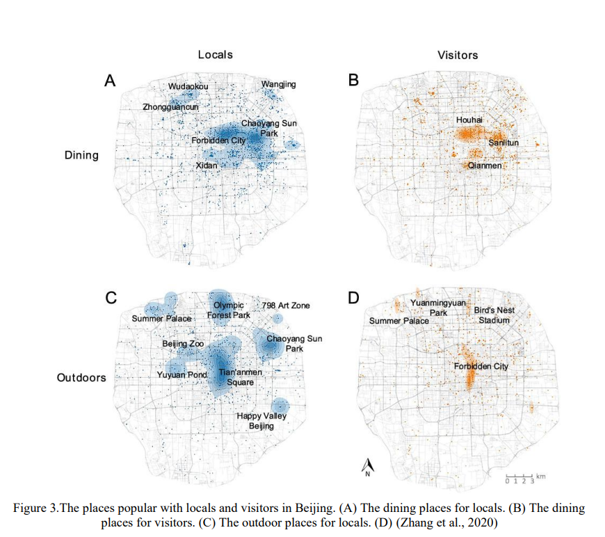
GIScience: Social Media and Notion of Place EN
How can geoinformatics combined with social media data reveal vague or ambiguous perceptions of urban places?